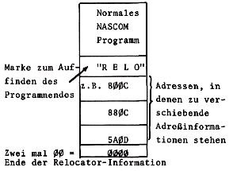
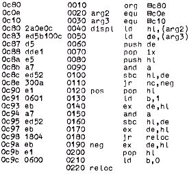

Nascom Journal |
Juni 1981 · Ausgabe 6 |
Das weiter oben beschriebene Relocator-Programm eignet sich ausgezeichnet, wenn bereits mehrere Programme im TDL-Format vorliegen. Dies ist für den Nascom leider nicht der Fall. Außerdem ergeben sich noch einige weitere Nachteile:
| Das Umschreiben alter Programme scheint doch recht aufwendig. | |
| Eine Zeile im TDL-Format ist bedeutend länger als im Nascom R- oder L-Format und zudem schwer lesbar, da Zwischenräume fehlen. | |
| Falsche Eingabe bei Relocator zerstört Programmfile ohne Error-Meldung. | |
| Komplizierte Verbesserung falscher Zahlenwerte (Berechnung des Komplements mit ASCII-Tabelle) | |
| Nicht in EPROM speicherbar. | |
| Augenblicklich nur mit Nassys verwendbar. |
Um obige Nachteile zu vermeiden, habe ich einen kleinen Relocator entwickelt, der sehr einfach anzuwenden ist. Seine Vorteile liegen darin, daß er
Format:

Arbeitsweise:
Sie laden ein Programm wie gewohnt, oder Sie tippen es manuell ein, wobei Sie es schon in den Bereich legen sollten, auf dem es bei Ihnen laufen soll. Das geladene Programm muß jedenfalls immer in den gewünschten Bereich kopiert werden.
Nun hängen Sie an das Programm 52h 45h 4Ch und 4Fh an („RELO“), um den Beginn der Relocate-Information zu kennzeichnen. Daran müssen sich die Adressen anschließen, deren Inhalte zu verschieben sind.
Beispiel: Im Originallisting steht bei
0C80 CD 48 0D
Sie müssen nun 810C ans Programm anhängen, weil dort die zu verschiebende Adresse beginnt .
Dieses Verfahren führen Sie fort, bis alle direkten Sprünge, Calls und Adreßladebefehle angehängt sind. Dann wird durch 00 00 das Ende kenntlich gemacht.
Sie starten den Relocator, der übrigens voll verschieblich und auch in EPROM speicherbar ist, im abgedruckten Beispiel bei C80, wobei Sie als Argumente die Originalstartadresse und die Zieladresse eingeben.
Beispiel: Ein Originalprogramm beginnt bei 0DE0. Es soll bei Ihnen auf
1000 beginnen. Sie geben ein: EC80 0DE0 1000 NL Der Relocator
errechnet nun aus Start- und Zieladresse das Displacement. (Es kann
sowohl nach oben als auch nach unten verschoben werden).

| Seite 17 von 20 |
|---|